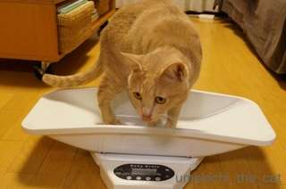
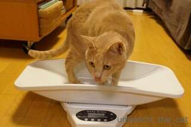
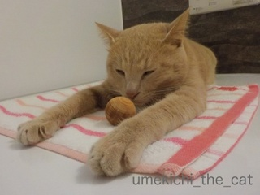

梅吉ダイエット1ヶ月 [梅吉]
予防接種時の血液検査で体重を落とすように指導された梅吉さん。
あれからひと月の間動物のお医者さんの指導に従って食事を減らし専用体重計で体重管理をしてきました。
３〜４日に一度の割で計ってきた体重。今日はダイエット1ヶ月目の計量大会！わぁぁ！！ぱちぱち〜。

体重計を出すと早速「全てにもれなく参加猫 梅吉」がやってきました。

![[猫]](https://blog.ss-blog.jp/_images_e/101.gif) どれどれ、わしのたいじゅうけいやな
どれどれ、わしのたいじゅうけいやな

なんやぎょうさんみてるひとがおるような・・・まっええか
じゃじゃ〜〜ん！4980gです！！
1ヶ月前が5250ｇだったので −270ｇの減量です。
目標体重は4650ｇなので良いペースで減ってきているのではないでしょうか。
わしはやればできるこなんやで。（どやぁ〜）
もっとも梅吉の場合体重そのものよりも血液中の中性脂肪の値が高かったのでダイエットに。
基準値10.0〜100.0mg/dlに対して梅吉は180.0mg/dlでした。
まだ１歳6ヶ月にしておっさんみたいな数値じゃない、梅吉さん。
ダイエットで上手く数値が下がってくれると良いのですが依然高いままだと
その他の原因や体質とも考えられ投薬治療になる可能性もあるな〜と少々心配。
まぁ、まずはこのまま食事制限。
運動の方は家の中を走り回りおとーさんと稽古もしているので大丈夫。
フローリングのドリフト痕と畳がすごいよ〜泣
 ↑ガブッと一押し↑
↑ガブッと一押し↑
あれからひと月の間動物のお医者さんの指導に従って食事を減らし専用体重計で体重管理をしてきました。
３〜４日に一度の割で計ってきた体重。今日はダイエット1ヶ月目の計量大会！わぁぁ！！ぱちぱち〜。

体重計を出すと早速「全てにもれなく参加猫 梅吉」がやってきました。


じゃじゃ〜〜ん！4980gです！！
1ヶ月前が5250ｇだったので −270ｇの減量です。
目標体重は4650ｇなので良いペースで減ってきているのではないでしょうか。
もっとも梅吉の場合体重そのものよりも血液中の中性脂肪の値が高かったのでダイエットに。
基準値10.0〜100.0mg/dlに対して梅吉は180.0mg/dlでした。
まだ１歳6ヶ月にしておっさんみたいな数値じゃない、梅吉さん。
ダイエットで上手く数値が下がってくれると良いのですが依然高いままだと
その他の原因や体質とも考えられ投薬治療になる可能性もあるな〜と少々心配。
まぁ、まずはこのまま食事制限。
運動の方は家の中を走り回りおとーさんと稽古もしているので大丈夫。
フローリングのドリフト痕と畳がすごいよ〜泣
わしの自信作 [梅吉]
おとーさんがわしのみりょくをあますところなくうつせたっていっとる。
みたってや。
布団乾燥機に負ける父母 [梅吉]
氷と戦う男！？ [梅吉]

寝落ちの瞬間 [梅吉]
香箱が似合う季節 [梅吉]
一人でも上手に遊べるで [梅吉]
おかーさんの物はわしの物 [梅吉]
ひざかけとして愛用していたハーフブランケットはすっかり梅吉さんの物。
しょうがないので新しいひざ掛けを購入。ちょっと置いておくと・・・
つかいたいんですけど( ･̆ˍ･̆ )
あまりにも気持ちよさそうの寝ているのでそのままに。
そして夜。
え〜〜〜〜っ( ･̆ˍ･̆ )( ･̆ˍ･̆ )
もう一枚買おうか検討中・・・・
立ち上がる梅吉さん [梅吉]
お風呂大好き２ [梅吉]
毎晩お風呂を楽しむ梅吉さん。

こんな格好でリラックスしたり
（良いレシーブができそう！）

ヒノキ玉の香りを嗅いだり。
でも、多分最大のリラックスはこれだと思ってます。
お鼻ほじほじ・・・・^_^;
新陳代謝の活発な幼い頃、寝起きの目ヤニがすごかった梅吉。
ある日なにげに「お鼻の穴黒いね〜」と言いながら触ったら、取れた・・・・・黒いのが( ꒪ω꒪)
黒い模様かと思っていたのでそれはそれはびっくりしました。
新陳代謝が活発なら目にも鼻にもたまりますよね！
それ以来お鼻ホジホジはお風呂での習慣。また気持ちよさそうな顔するんですよね〜笑
ちなみに担当はおっと。ワタクシはお顔拭き担当です。

カフェオレ色の梅吉

梅吉 2023年8月10日 永眠


梅吉と出会った譲渡会

犬猫の理由なき殺処分ゼロ
妄想広告
UMEKICHI 光

爆発的に早い！
時々攻撃的！
Thanks to Mr.Boss365
爆発的に早い！
時々攻撃的！
Thanks to Mr.Boss365